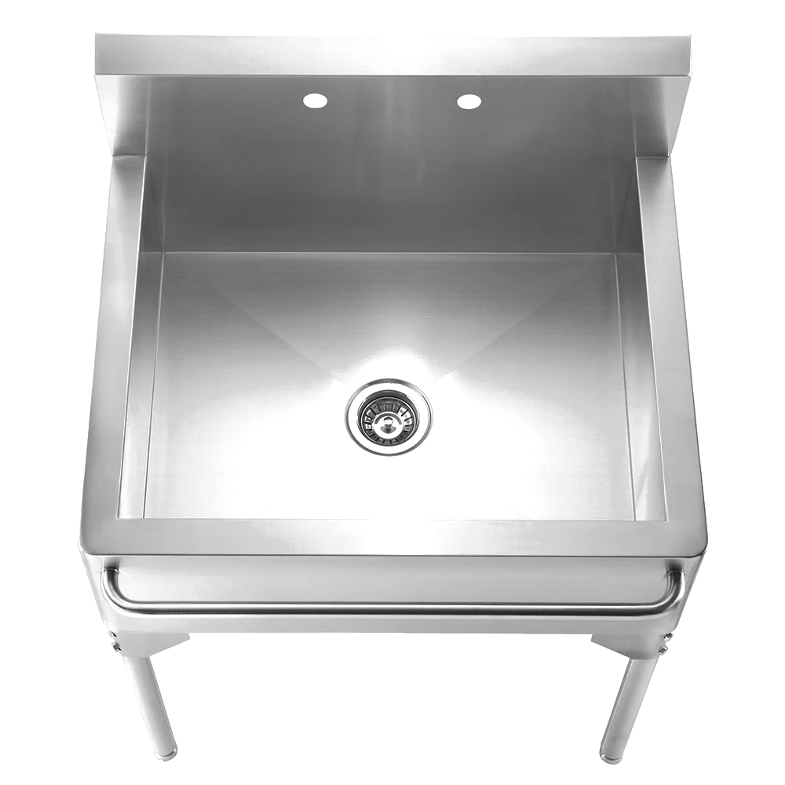
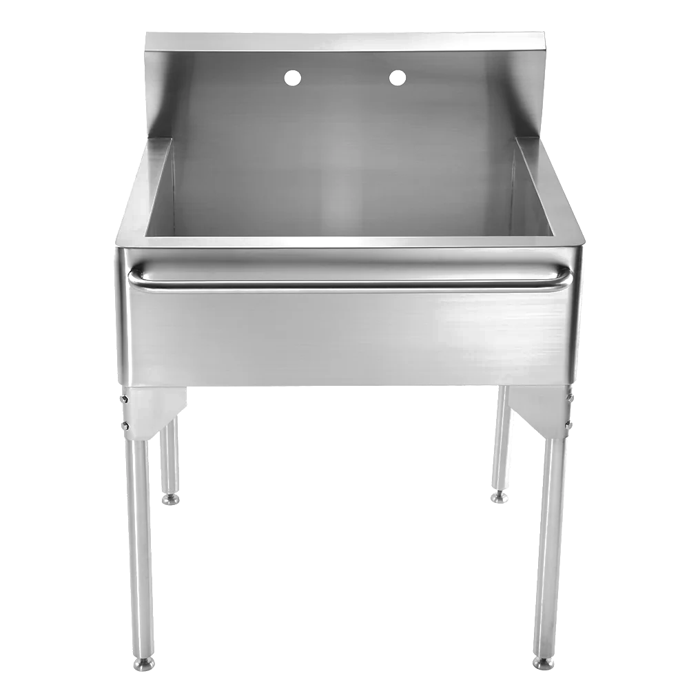
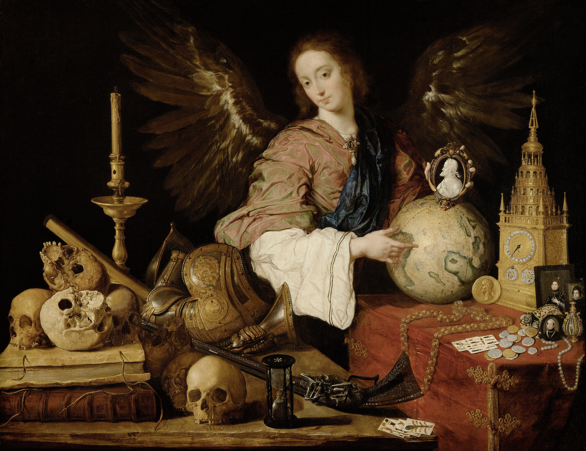
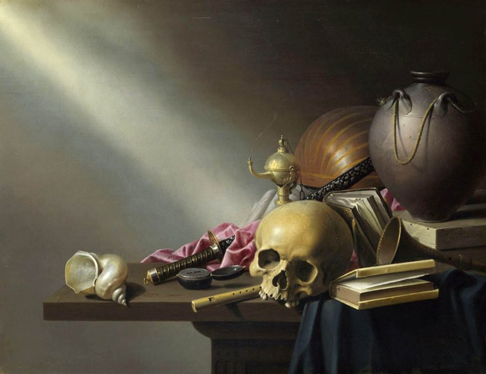
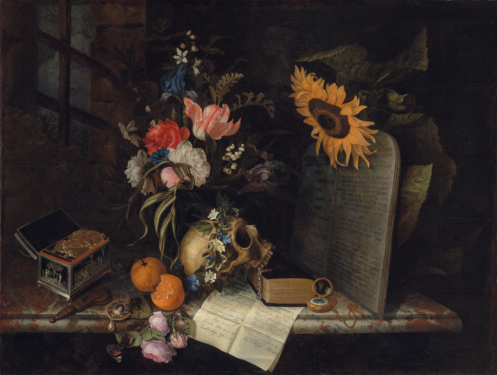
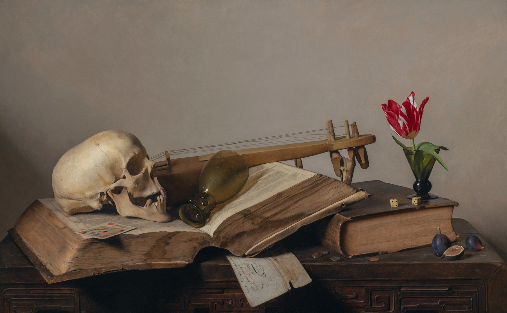
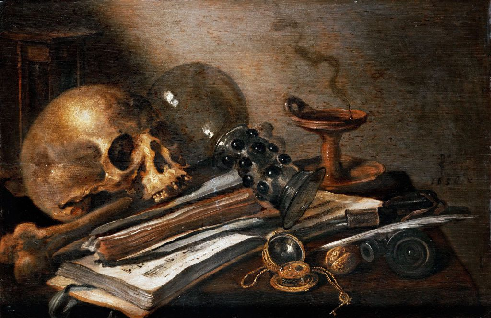

A screen where the drain should be, looping the slop — top-down.
30 × 25 × 39½ in · bowl 26 × 21 × 9¾ in

approx. to scale
 01
01 02
02 03
03 04
04 05
05 06
06 07
07 08
08A big print pulls you across the room. A figure bowed over a sink, face blown to white and stippled into halftone, bringing up one gold blob. Vomit, or a nugget. You genuinely can’t tell. You reach the basin already in her posture — hunched, mid-purge, washing up or throwing up. The tap gives no water: a font that cannot clean you, nothing here to wash in but more image.
Vanitas is a 400-year-old genre — the Dutch still lifes crammed with skulls, dead flowers and soap bubbles, all murmuring the same thing. You are going to die; put down the goblet. The bubble was the favorite symbol. Homo bulla, man is a bubble: shiny, inflated, and then not there. Mine are AI bubbles, and I mean it twice — the soap bubble the Dutch painted for fragility, and the speculative one a lot of us quietly fear we are standing inside. The next dot-com, one pin from gone.
The print up top is the one piece of me in the room: a self-portrait by omni-reference, hung and lit as a mirror so your face lands on mine and briefly wears the dissolve. It is my face on the front. Standing at the basin, it is also yours. I am not above the slop; I am admitting, on aluminium, that I am sometimes sloppy too.
The slop here is the pretty kind, over-rendered until it squeaks, and the piece answers it with the one thing a model cannot fake: a reflex. What the body brings up reads as waste and treasure at once — the joke, and the point. The gold is a borrowed colour, near enough the orange of the labs that build these models. The tool has signed its own confession.
The faucet handle is the off switch: hold it and the slop pauses, let go and it floods back. I freedive, and holding the handle is the same as holding a breath underwater — stillness on purpose, against everything in you that wants to let go. Pilate asked what truth was, then washed his hands of the answer. This asks the reverse. The veritas is the hand that stays, the eye that chose these frames from a hundred thousand. In a room of generated everything, that choice is the only ground truth left.

Allegory of Vanity · c.1636 · KHM Vienna

Allegory of the Vanities… · c.1640 · Nat. Gallery

Vanitas with a Sunflower · 1668 · Rijksmuseum

Vanitas Still Life (detail) · 1630 · Mauritshuis

Vanitas Still Life · contemporary

Vanitas Still Life · dated 1650
The Dutch Republic in the 1600s had just gotten rich, fast: global trade, a new merchant class, tulip futures, more imported luxury than anyone knew what to do with — and a rigid Calvinism that held your possessions cannot save you. Vanitas is that contradiction in paint.
A patron commissions his shells, gold and books, has them rendered gorgeously, then hangs a skull over the pile so the indulgence reads as a sermon. Have the luxury, moralise the luxury.
Slop is our tulip mania — infinite cheap abundance, generated faster than anyone can value it. Vanitas told the 17th century its wealth was hollow while cashing the cheque; this piece says it to the feed.
San Francisco · 2026
The glossy 20×24 print rises from the sink on a slim, load-bearing post — lure and mirror, so the whole work is freestanding and needs no wall. The surface is reflective and lit on purpose, so your own face lands on the bowed figure with zero electronics.
A small bright screen sits in the basin under a sealed acrylic disc, looping the polished feed. You reach for the tap the way you would reach to wash, and no water comes; the lever only buys stillness.
It boots straight into the loop, and a power cut just restarts it playing. If the switch dies, the loop keeps running and the piece is still whole.